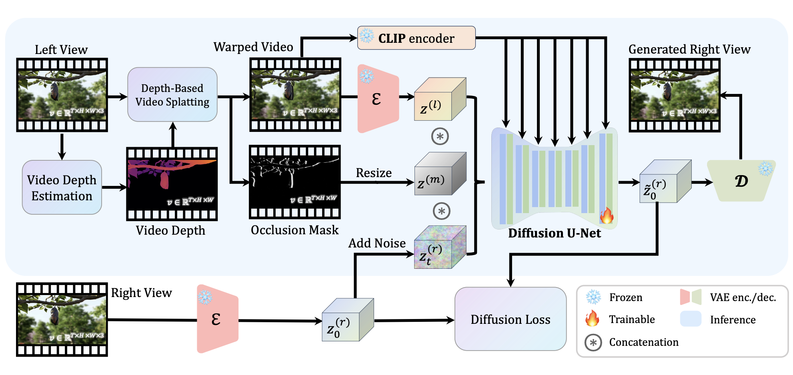
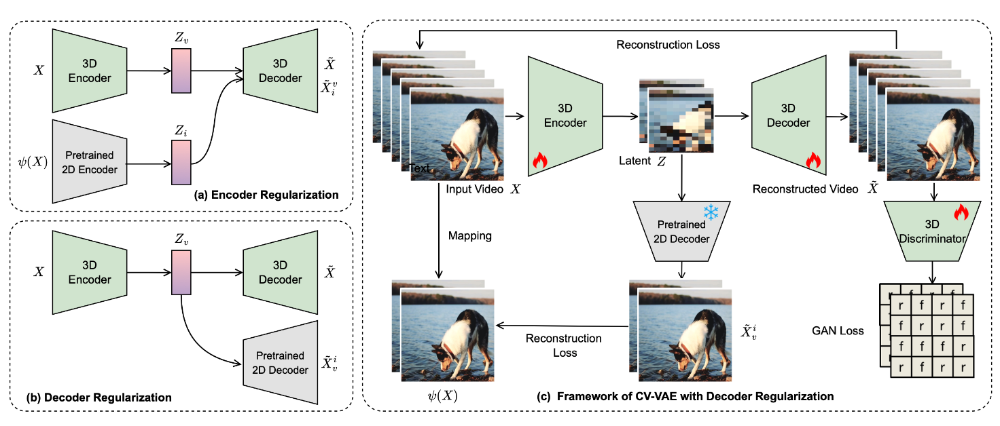
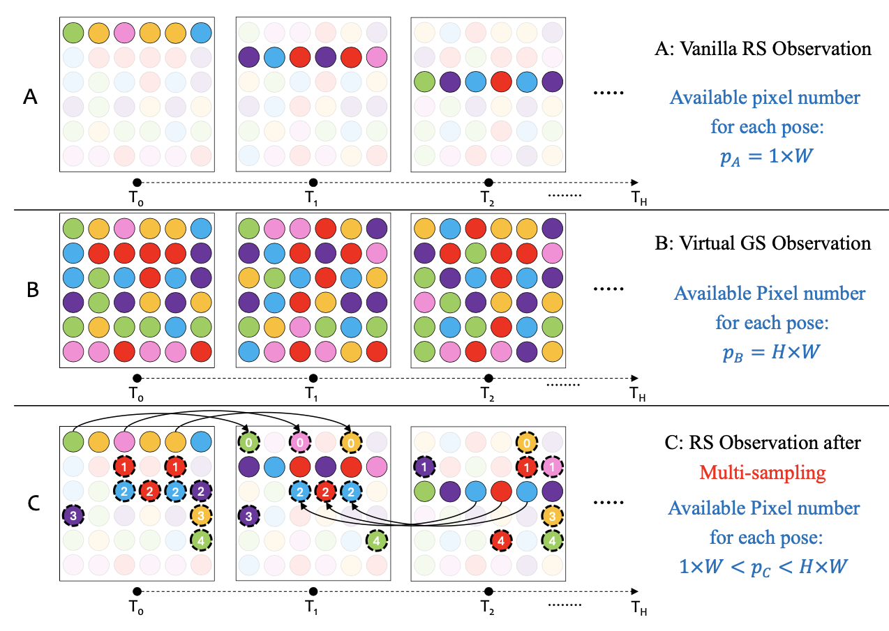
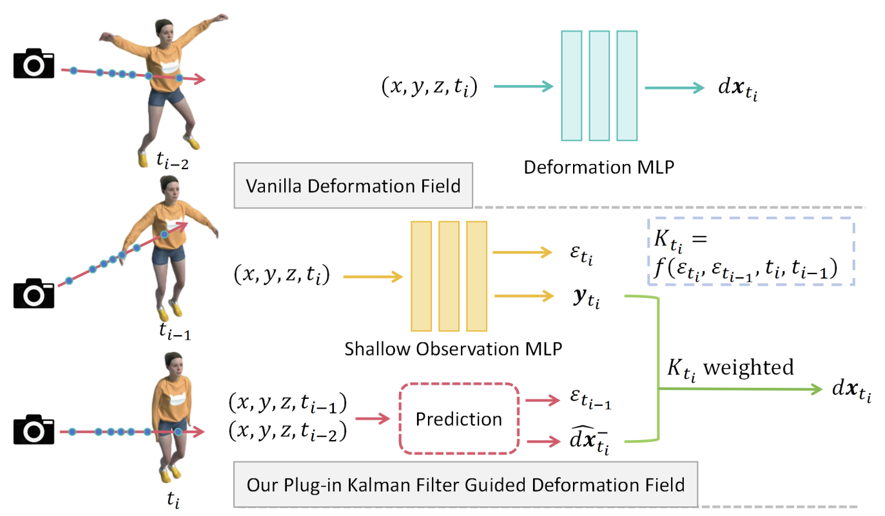
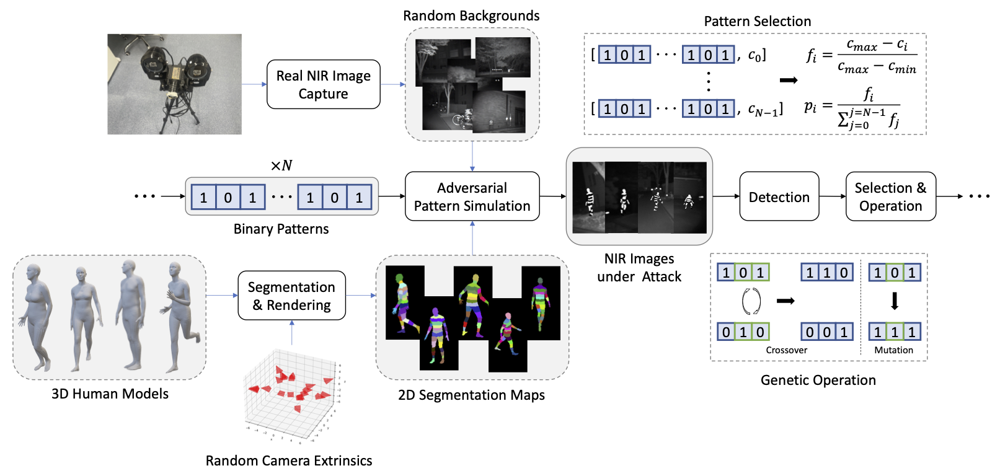
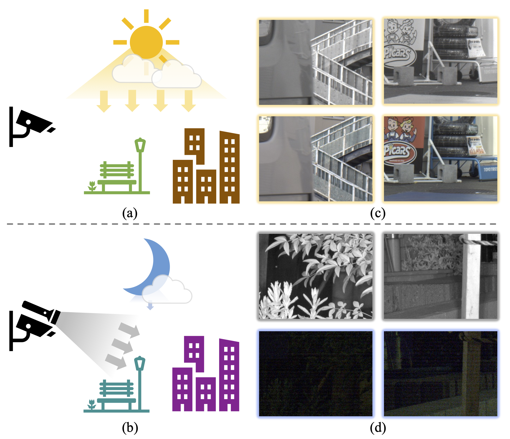
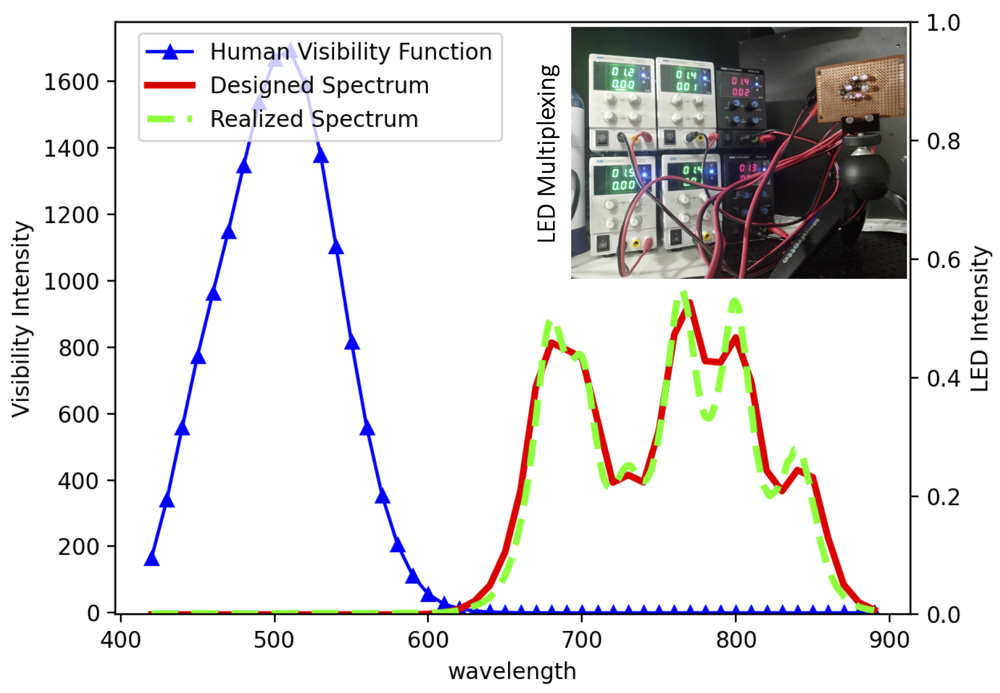
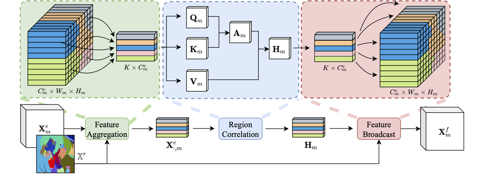

|
Muyao Niu (牛慕尧) Hi, I'm Muyao Niu. I am a 2nd year master student in the Department of Mechano-Informatics, the University of Tokyo (UTokyo). My supervisor is Prof. Yinqiang Zheng . I received my B.E. degree from Dalian University of Technology in 2022. My research interests include Computational Photography, AIGC, and 3D Vision. |
{kind=link}
Research |
|  |
StereoCrafter: Diffusion-based Generation of Long and High-fidelity Stereoscopic 3D from Monocular Videos
Sijie Zhao*, Wenbo Hu*, Xiaodong Cun*, Yong Zhang#, Xiaoyu Li#, Zhe Kong, Xiangjun Gao, Muyao Niu, Ying Shan arXiv (Technical Report), 2024 project / paper We present a novel framework for converting 2D videos to immersive stereoscopic 3D, addressing the growing demand for 3D content in immersive experience. Leveraging foundation models as priors, our approach boosts the performance to ensure the high-fidelity generation required by the display devices. |

|
MOFA-Video: Controllable Image Animation via Generative Motion Field Adaptions in Frozen Image-to-Video Diffusion Model
Muyao Niu, Xiaodong Cun, Xintao Wang, Yong Zhang, Ying Shan, Yinqiang Zheng ECCV, 2024 project / paper / code We introduce MOFA-Video to adapt motions from different domains to the frozen Video Diffusion Model. MOFA-Video can effectively animate a single image using various types of control signals, including trajectories, keypoint sequences, and their combinations. |
|  |
CV-VAE: A Compatible Video VAE for Latent Generative Video Models
Sijie Zhao, Yong Zhang, Xiaodong Cun, Shaoshu Yang, Muyao Niu, Xiaoyu Li, Wenbo Hu, Ying Shan NeurIPS, 2024 project / paper / code We propose CV-VAE that is compatible with existing image and video models trained with SD image VAE. Our video VAE provides a truly spatio-temporally compressed latent space for latent generative video models, as opposed to uniform frame sampling. |
|  |
RS-NeRF: Neural Radiance Fields from Rolling Shutter Images
Muyao Niu, Tong Chen, Yifan Zhan, Zhuoxiao Li, Xiang Ji, Yinqiang Zheng ECCV, 2024 paper / code We improve NeRF to consider the RS distortions with two technologies: camera trajectory smoothness regularization and multi-sampling strategy. |
|  |
KFD-NeRF: Rethinking Dynamic NeRF with Kalman Filter
Yifan Zhan, Zhuoxiao Li, Muyao Niu, Zhihang Zhong, Shohei Nobuhara, Ko Nishino, Yinqiang Zheng ECCV, 2024 paper / code We combine dynamic neural radiance field with a motion reconstruction framework based on Kalman filtering, enabling accurate deformation estimation from scene observations and predictions. |
|  |
Physics-Based Adversarial Attack on Near-Infrared Human Detector for Nighttime Surveillance Camera Systems
Muyao Niu, Zhuoxiao Li Yifan Zhan, Huy H. Nguyen, Isao Echizen, Yinqiang Zheng ACM MM, 2023 paper / code We introduced an innovative approach that passively manipulates the intensity distribution of NIR images and developed a 3D-aware, black-box attack algorithm to target deep learning-based NIR-powered human detection systems. |
|  |
NIR-assisted Video Enhancement via Unpaired 24-hour Data
Muyao Niu, Zhihang Zhong, Yinqiang Zheng ICCV, 2023 paper / code We addressed the issue of collecting data for utilizing NIR images to improve low-light VIS videos. Physiscs-inspired algorithms are designed to simulate pseudo paired data of NIR and VIS images, simulating day-to-night situations. We then trained an enhancement network using the generated pseudo data. |
|  |
Visibility Constrained Wide-band Illumination Spectrum Design for Seeing-in-the-Dark
Muyao Niu, Zhuoxiao Li, Zhihang Zhong, Yinqiang Zheng CVPR, 2023 paper / code We designed an optimal illumination spectrum in the VIS-NIR range by considering human vision constraints, which significantly improves translation performance. A fully differentiable model was proposed, which includes the imaging process, human visual perception, and the enhancement network. |
|  |
Region Assisted Sketch Colorization
Ning Wang*, Muyao Niu*, Zhihui Wang, Kun Hu, Bin Liu, Zhiyong Wang, Haojie Li TIP, 2023 paper we proposed the Region-Assisted Sketch Colorization (RASC) method, which uses a 'Region Map' to better utilize regional information within the sketch, enhancing the perception of region-wise features. |
Interns
2024.08 - NOW: Computer Vision Research Intern at OpenGVLab, Shanghai AI Lab, mentored by Zhihang Zhong and Xiao Sun.
|
Awards/Scholarships
WING-CFS Special Research Assistant Scholarship, The University of Tokyo, 2023.04 - 2027.09 |
|
The template comes from the personal website of Jon Barron. |